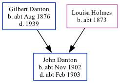

John William Danton cNov 1902 - c1903
[ Home ] | [ Calendar ] | [ Surnames Index ] | [ Family History ]The child of Gilbert Danton and Louisa HolmesJohn Danton, the second cousin once-removed on the father's side of Nigel Horne, was born in Ramsgate, Kent, England c. Nov 19021,2,3 and baptized there at St. Luke's Church on Oct 8, 1902.
He died c. Feb 1903 in Thanet, Kent, England3,4 (jan/Feb/Mar).
Parents
- Gilbert Edmund was born c. Aug 1876
- Louisa Mary was born c. 1873
Citations
- England & Wales births 1837-2006 - Findmypast
- England & Wales, FreeBMD Birth Index, 1837-1915 Online publication - Provo, UT, USA: The Generations Network, Inc., 2006.Original data - General Register Office. England and Wales Civil Registration Indexes. London, England: General Register Office. © Crown copyright. Published by permission of the Cont
- England & Wales, FreeBMD Death Index: 1837-1915 Online publication - Provo, UT, USA: The Generations Network, Inc., 2006.Original data - General Register Office. England and Wales Civil Registration Indexes. London, England: General Register Office. © Crown copyright. Published by permission of the Cont
- England & Wales deaths 1837-2007 - Findmypast
Media
England & Wales births 1837-2006 - BMD/B/1902/4/AZ/000146/255
England & Wales deaths 1837-2007 - BMD/D/1903/1/AZ/000090/335
Family Tree
Generated by ged2site. Last updated on Nov 13, 2024